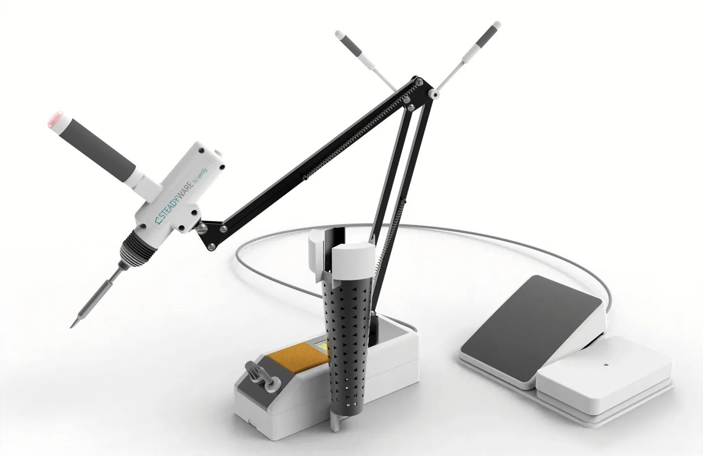
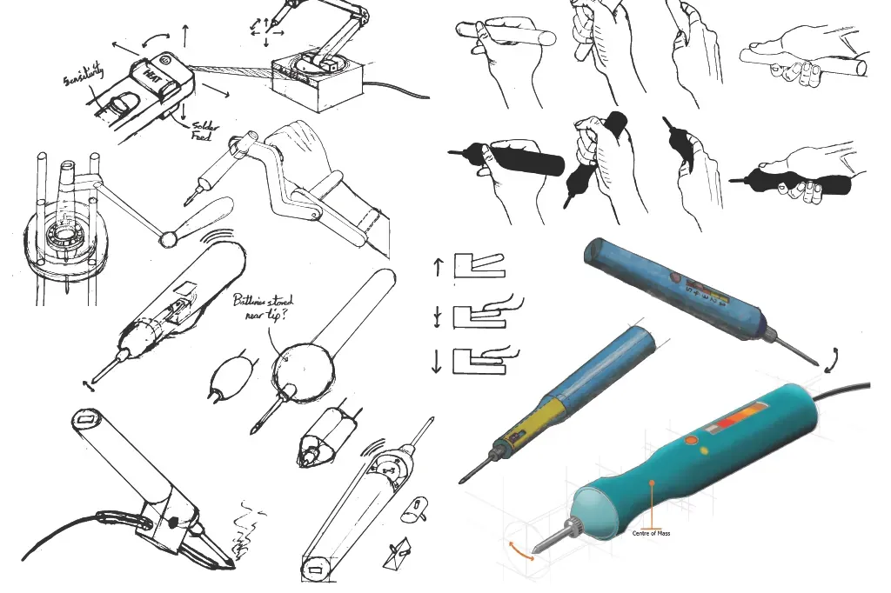
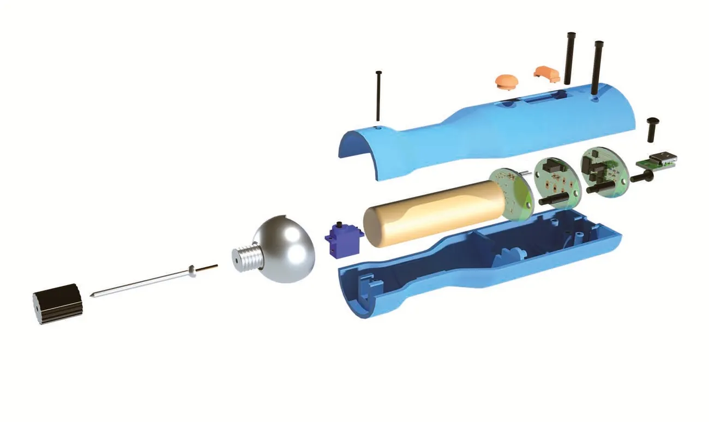
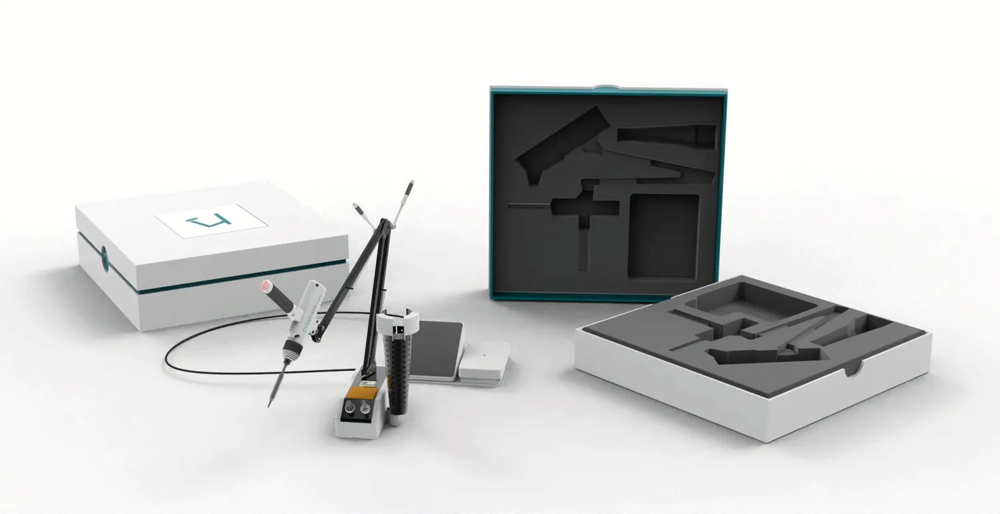
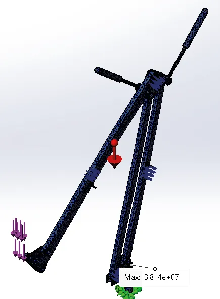
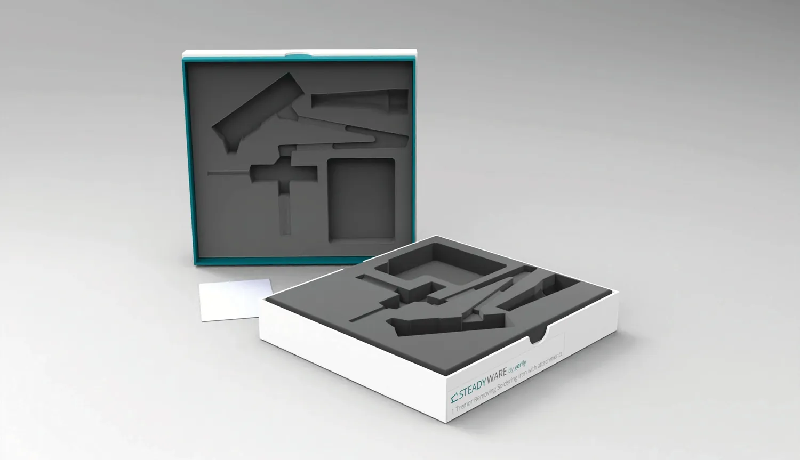

Inclusive Product Design2020–21
STEADYWARE
Product Design and Engineering
How might we make aiming and positioning a soldering iron easier and more reliable for those with dexterity issues?

STEADYWARE is a soldering iron and station based on a spring balanced lamp mechanism that steadies the tip, increasing ease of use and safety.
Soldering is a notoriously difficult task - you need to be practiced and have the right equipment. Many people have dexterity issues that greatly affect soldering, especially tremors, from slightly shaky hands up to Parkinson’s disease. Through companies like LIFTWARE by verily, there is an opportunity to target these niche problems with inclusive solutions.
Corrective Iron
My initial design used an accelerometer and servo to automatically correct the position of the tip of the iron and keep it steady, regardless of whether the rest of the iron is shaking. The electronics and battery all needed to fit into the casing whilst maintaining ergonomics and creating an advantageous centre of mass - a factor that the research found was important.



Tremor Removing Soldering Iron
Due to user and expert feedback and the ease of design validation through physical prototyping, a spring balanced lamp idea was pursued further. The design incorporates a battery powered soldering iron, a steadying spring balanced lamp, temperature control and display, a sponge, a guard and a pedal controlled solder tip advancement mechanism.

Product Engineering
I completed rigorous engineering development to ensure the feasibility of the design. This spanned from battery and power calculations through design for manufacture, injection moulding and assembly to finite element analysis. This informed us of the needed material for the arm, Aluminium 3004 alloy (as 3003 had insufficient tensile strength). A frequency analysis also showed that the arm would not resonate with the user’s tremor with a safety factor of 3 on the natural frequency.

Packaging
STEADYWARE matches the branding and packaging of the already established LIFTWARE to fit seamlessly into Verily’s portfolio of companies. This extended to factors such as the high pricing, where after establishing a production price from the BOM of £91.84, the soldering station would be priced somewhere between £250-350. Further work should go into exploring the same system in different applications and industries e.g. Medicine.